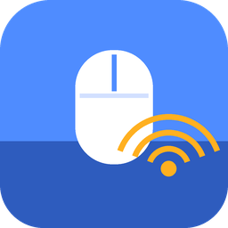
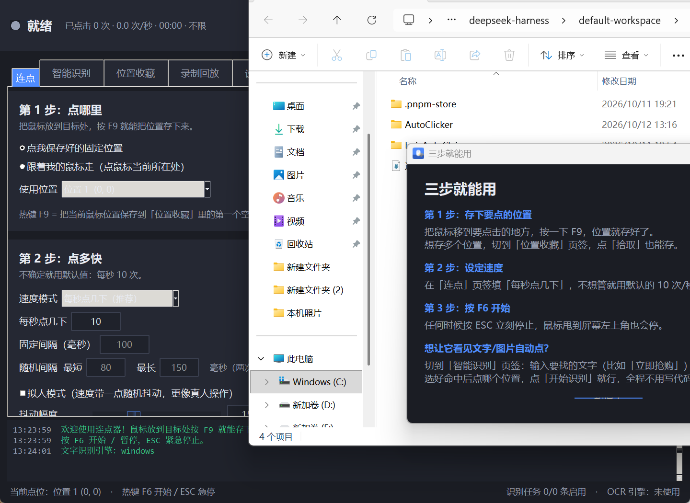
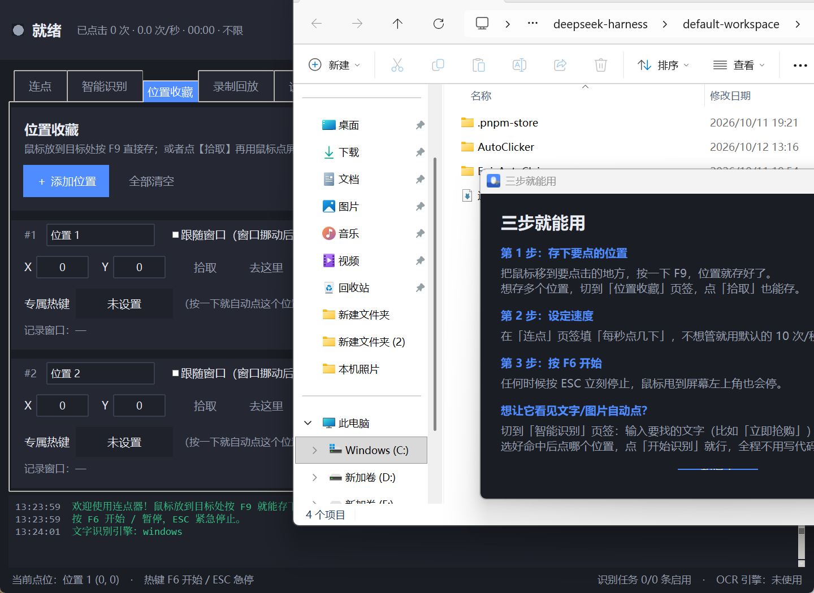
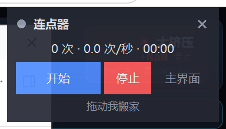
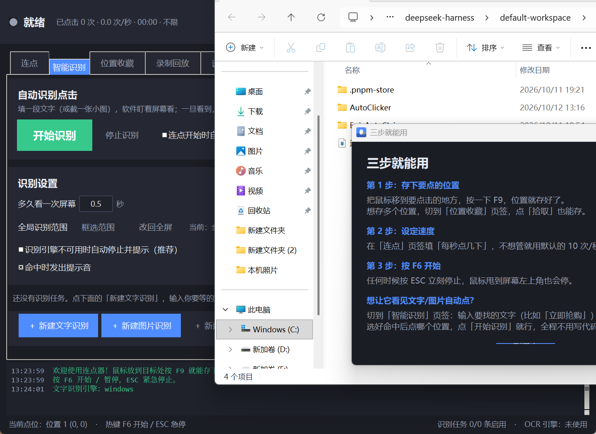
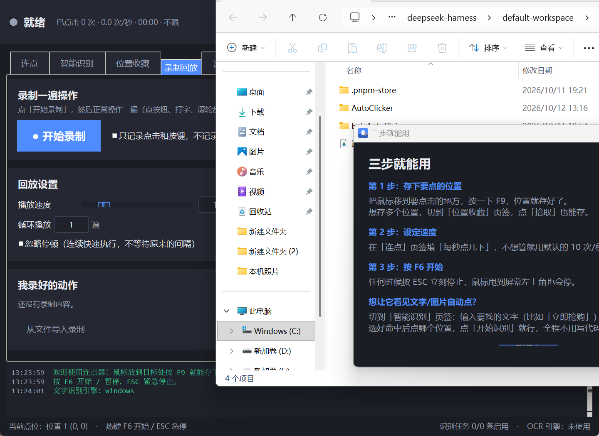

连点器 AutoClicker Pro 使用说明
免安装、纯本地运行、不联网、不上传任何数据。 全程点点点和填数字，不需要写一行代码。

一、怎么打开
- 打开文件夹 连点器
- 双击 连点器.exe
- 如果双击没反应，就双击 启动连点器.bat（会多一个黑窗口，能看到出错原因）
第一次打开会弹一个「三步就能用」的小窗口，看完关掉即可。
想放到桌面：右键 连点器.exe → 发送到 → 桌面快捷方式。 想换地方：整个「连点器」文件夹一起复制走就行，配置会跟着走。
二、三步就能用（最常用玩法）
第 1 步：告诉它点哪里
把鼠标移动到你要点的位置（比如游戏里的某个按钮），然后按一下键盘上的 F9。
界面下方会提示「已保存位置……」，位置就存好了。

第 2 步：设置速度
在「连点」页的 每秒点几下 里填数字，比如：
- 抢购、抢票：填 20 到 50
- 游戏挂机、签到：填 1 到 5
- 办公重复点击：填 2 到 10
不确定就用默认的 10。
第 3 步：按 F6 开始
按 F6 开始（再按一次暂停），界面右上角的按钮也能点。
任何时候想停，按 ESC，或者把鼠标一下甩到屏幕左上角，两个都是万能急停。
三、位置收藏（存很多个点位）
切到「位置收藏」页，每个点位是一张卡片。

- F9 快速存点：鼠标放好按 F9，会存到第一个空位置
- 拾取：点一下按钮，然后鼠标移到目标处点一下，就取到了（新手推荐这个）
- 去这里：鼠标立刻移动过去，但不点击，用来检查位置对不对
- 测试点击：移过去并真的点一下
- 设为当前目标：让「连点」页用这个点位
- 跟随窗口：勾上以后，点位记成窗口内的相对坐标。以后窗口移动了、拉大了，点击位置会自动跟着变，不会点空
- 专属热键：给这个点位单独设一个键（比如 F1），以后按 F1 就直接点这个位置
每个位置都可以改名字，改完自动保存。关掉软件也不会丢。
屏幕上的标记（很好用，建议开）
在设置里勾上「在屏幕上显示位置标记」以后，屏幕上会直接画出来：
- 绿色十字 + 名字：你存好的位置（当前正在用的那个是绿色，其它是灰色）
- 蓝色虚线框：识别范围
迷你悬浮面板
点右上角的「迷你面板」，会出现一个半透明小窗：只有开始/停止和实时计数，可以拖到任何地方，永远在最前面。

四、智能识别：看到文字 / 图片就自动点（重点功能）
这是本次新增的核心功能：你在框里输入一段文字（或者截一张小图），软件盯着屏幕看，一旦看到，鼠标就自己跑过去点你指定的位置。
切到「智能识别」页 → 点 ＋ 新建文字识别。

4.1 找文字（OCR）
- 在 要找的文字 框里打字，比如
立即抢购
- 一行一个，可以写多个（比如
立即抢购 和 马上抢，出现任意一个就会触发）
- 找到以后 选：
- 点击我保存好的位置 — 点你之前存好的点位（推荐，最稳）
- 直接点识别到的地方 — 点文字本身所在的位置，还能用「微调横向/纵向」偏移几个像素
- 命中后休息 填 3 秒，防止疯狂连点同一个按钮
- 点 测试识别 —— 屏幕上会画出红框告诉你找到没有
- 都对了以后点 开始识别
识别范围：默认全屏。如果屏幕上同样的字太多，点 框选范围，在屏幕上拖一个方框，只在这个范围里找。 范围越小，识别越快越准。
4.2 找图片（截图对比）
比找文字更快更准，适合按钮、图标、道具。
- 点 截图取图，然后在屏幕上把那个按钮框起来
- 模板就存好了（可以加多张）
- 相似度 默认 85%，找不到就往左拉一点（比如 75%）
4.3 找颜色
填 R、G、B 三个数字，或者点 从屏幕取色 直接在屏幕上点一下取色，再调「容差」。
适合判断血条、进度条、某个色块出现没有。
4.4 识别设置
- 多久看一次屏幕：默认 0.5 秒。想反应更快填 0.2，想让电脑更省力填 1.0
- 全局识别范围：给所有任务统一限定范围
- 连点开始时自动一起启动识别：勾上以后，按 F6 就会连点 + 识别一起跑
- 命中时发出提示音：听到「叮」一声就知道抓到了
注意：识别是只读屏幕，不会抢你的鼠标。只有真的命中时才会动鼠标去点一下。
五、录制回放
不想一条条设参数？让它学你操作一遍。

- 点 ● 开始录制
- 正常操作一遍：点按钮、打字、滚轮
- 回来点 ■ 停止录制
- 列表里出现一条录制，点 ▶ 回放 就能重放
- 播放速度：1 倍速和你当时一样快，2 倍速快一倍
- 循环播放：填 10 就重放 10 遍
- 忽略停顿：勾上以后不等待原来的间隔，飞快执行
- 只记录点击和按键：勾上以后不记鼠标移动路径，更干净
六、热键一览（都能改）
| 按键 | 作用 |
|---|
| F6 | 开始 / 暂停连点 |
| F7 | 单击一次（点一下目标位置） |
| F8 | 倒计时 3 秒后开始 |
| F9 | 把当前鼠标位置存成点 |
| F10 | 显示 / 隐藏主界面 |
| ESC | 紧急停止（万能急停） |
| Ctrl+Alt+Q | 退出程序 |
| 鼠标侧键 X2 | 按住期间持续连点，松开即停 |
改法：切到「设置」页 → 全局热键 → 点一下右边的按钮 → 直接按你想用的键（鼠标侧键也可以）。
七、安全提示（建议看一眼）
- 急停一定记得：ESC 键，和鼠标甩到屏幕左上角
- 速度别一上来就拉满：超过 50 次/秒会弹确认框，太快的连点有可能让某些程序卡住
- 只在前台窗口点击：在「连点」页的高级设置里。勾上并填上目标窗口标题后，只有那个窗口在最前面时才会点，你在别的窗口打字不会被乱点
- 后台点击：勾上以后不抢鼠标，你还能一边点一边用电脑。但部分程序（尤其游戏）不支持，试了没反应就取消勾选
- 点击没反应的两种情况：
- 目标程序是以管理员身份运行的，那连点器也要以管理员运行。设置页有「以管理员身份重启」按钮
- 游戏用了反作弊/独占输入，需要在目标程序里把「以管理员运行」关掉，或者改用「后台点击」
八、常见问题
问：识别文字没找到，怎么办？
- 先点「测试识别」，看提示里「这一屏识别到的文字」是什么——如果识别到的文字缺字、错字，说明那块字太小，把识别范围框小一点会准很多
- 确认要找的文字没有多余空格（程序默认忽略空格，一般不用管）
- 屏幕缩放如果特别大（比如 200%），可以把系统缩放调到 150% 再试
问：文字识别一直提示「引擎不可用」？
说明系统的中文识别组件没装。可以先用「找图片」功能，效果一样好，而且不需要 OCR。
装法：Windows 设置 → 时间和语言 → 语言 → 添加语言 → 中文（简体）→ 勾上「光学字符识别」。
问：鼠标自己动了，我抢不过来怎么办？
按 ESC，或者把鼠标甩到屏幕左上角。急停之后鼠标完全归你。
问：关闭窗口后程序不见了？
默认是最小化到托盘了，看屏幕右下角时间旁边的小图标，双击它就能打开。想彻底退出：托盘图标右键 → 退出程序。
不想要这个行为：设置页 → 通用 → 取消勾选「关闭窗口时最小化到托盘」。
问：怎么让它到点自动开始？
设置页 → 计划任务 → 勾选「启用计划任务」，选「每天固定时间」，填 09:00，再填运行多少分钟后自动停。
问：设置乱了想恢复？
- 热键：设置页 → 恢复默认热键
- 全部：设置页 → 配置档 → 「另存为」保存一份，乱了一键切回来
- 彻底重置：关掉程序，删掉
config 文件夹里的 settings.json
问：怎么卸载？
直接删除整个「连点器」文件夹。它是绿色的，不写注册表（除非你勾了开机自启，那就在设置页取消勾选）。
九、文件夹里都有什么
- 连点器.exe — 主程序，双击这个
- 启动连点器.bat — 备用启动方式（能看到报错信息）
- app — 程序源码（想加功能时用，平时不用管）
- runtime — 自带的 Python 运行环境（不用自己装任何东西）
- config — 你的所有设置、存好的位置、截的模板图（要备份就备份这个文件夹）
- docs/screenshots — 界面截图
- 使用说明.md / 使用说明.html — 就是这份说明
*祝你点得开心。记得 ESC 是万能急停。*